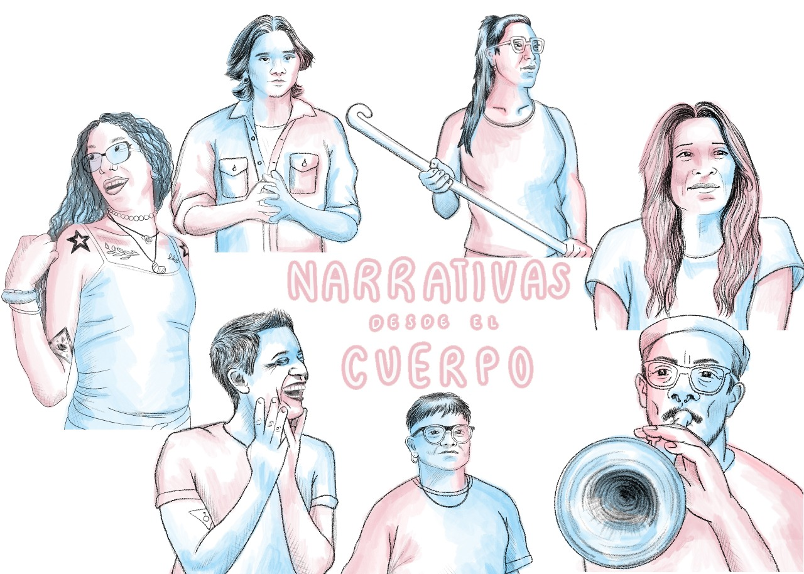
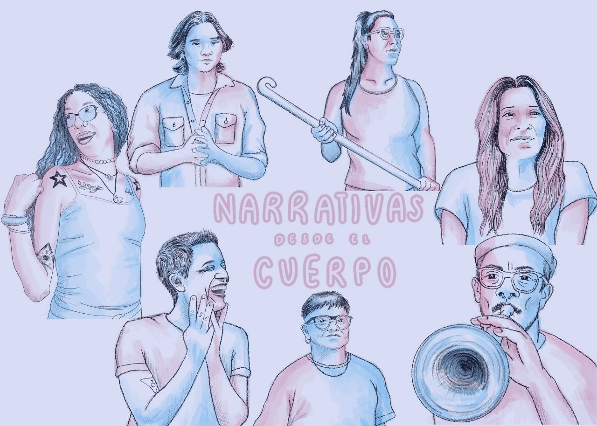
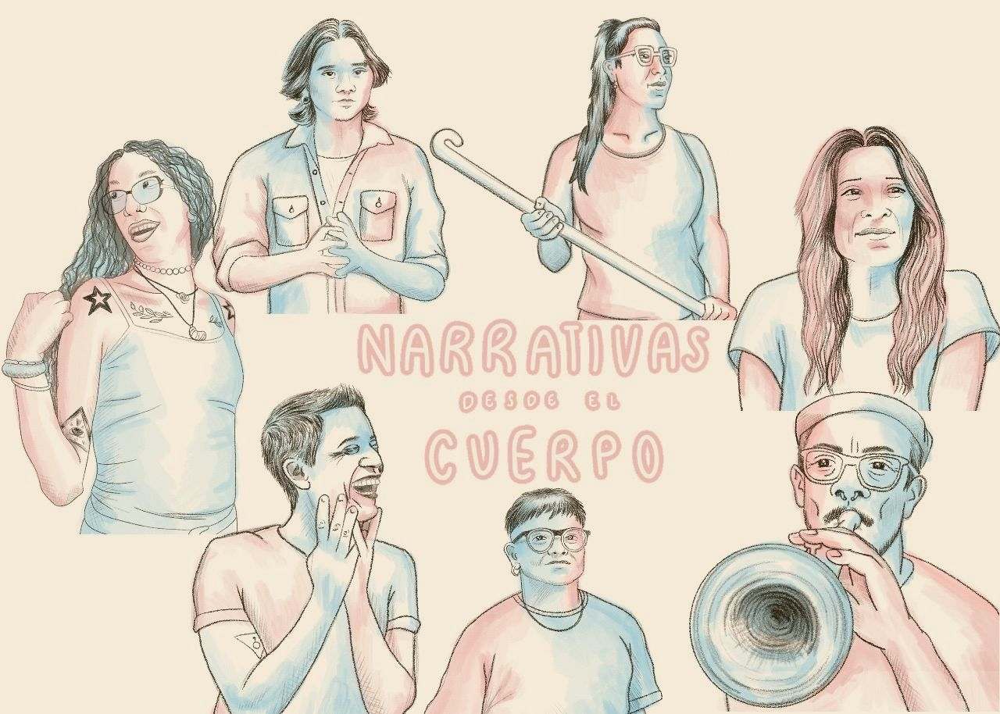
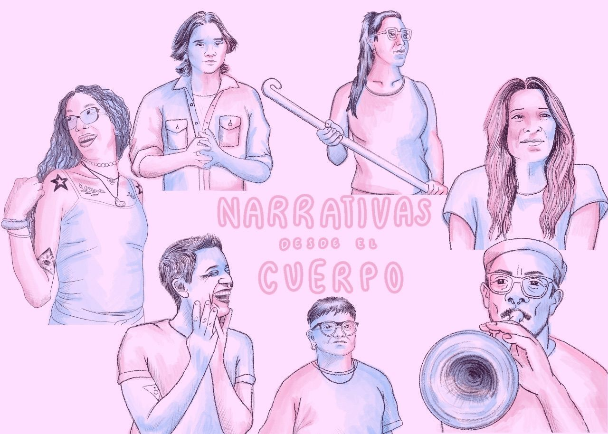

DOCUMENTAL
Narrativas desde el cuerpo

“Narrativas desde el cuerpx” es una serie documental que explora el derecho a la identidad
de género desde la mirada interseccional entre quienes vivenciaron sus propias transiciones
de género, y quienes acompañaron estos procesos.
Sus voces testimoniales, oriundas de las provincias de Córdoba, Mendoza, San Luis y Buenos
Aires, nos invitan a viajar para conocer las particularidades de cada región en una
reflexión sobre las prácticas médicas y sociales que se implican en el reconocimiento y
validación de las identidades autopercibidas.
Con una narrativa que expone los saberes irremplazables de lo vivencial, “Narrativas desde
el cuerpx” dialoga con las disciplinas de la psicología, la medicina, la química y la
biología para comprender el rol irremplazable de la salud pública para consolidar las bases
de un derecho democrático tan imprescindible como cuestionado.
TRAILERS
Capítulo 1
Descripción breve del capítulo 1.

Capítulo 1
Capítulo 2
Capítulo 3